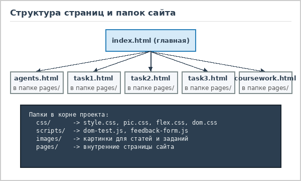

Учебные задания по курсу верстки
На этой странице собрано общее описание всех практических заданий, которые я выполнял в течение семестра и объединил на сайте AgentLab. Каждая работа открывается на собственной странице вместе с живой демонстрацией и подробным разбором решения.
Задание 1. Рисунок средствами CSS (вариант 1)

В первой лабораторной работе нужно было сверстать заданную по варианту иллюстрацию в квадратной области размером 200x200 пикселей, используя только блочные элементы HTML и правила CSS. Вставлять обычные картинки или использовать SVG-графику в этом задании было нельзя, поэтому все детали собирались из простых фигур.
При выполнении этой работы я на практике разобрался с абсолютным позиционированием (position: absolute
внутри контейнера с position: relative), научился делать овалы, капли и листья через разные значения
border-radius, строить треугольные зубы за счет прозрачных боковых рамок и заливать фон полосатым
градиентом repeating-linear-gradient. Полный разбор и сам живой рисунок доступны на
странице Задания 1.
Задание 2. Анимированный ролик на Flexbox (вариант 3)

Второе задание было посвящено изучению раскладки Flexbox, плавных переходов transition и покадровой
анимации @keyframes. В окне 200x200 пикселей требовалось собрать интерактивную сценку про принца
и лягушку, которая реагирует на наведение курсора (:hover) и нажатие кнопки мыши (:active)
вообще без использования скриптов JavaScript.
Верхняя панель с репликами и нижняя сцена выстроены флекс-колонкой, а сами персонажи внутри сцены стоят в ряд
и выровнены по нижней границе через align-items: flex-end. Посмотреть работу ролика и схему
флекс-контейнеров можно на странице Задания 2.
Задание 3. Интерактивный DOM-тест на JavaScript (вариант 2)

В третьей работе нужно было написать скрипт викторины на знание старинных русских бранных слов. Главная
особенность задания состоит в том, что изначально в HTML-разметке есть только кнопка "Вопрос" и пустые
контейнеры, а все карточки вопросов, варианты ответов, иконки проверки и финальная статистика создаются
динамически через методы DOM API (document.createElement, appendChild,
classList).

Кроме того, при каждом обновлении страницы список вопросов и порядок вариантов ответа перемешиваются в случайном порядке, а после завершения викторины можно кликнуть по любому пройденному вопросу, чтобы еще раз прочитать словарную справку. Пройти викторину можно на странице Задания 3, а прочитать о самом сайте - в разделе "Описание сайта".